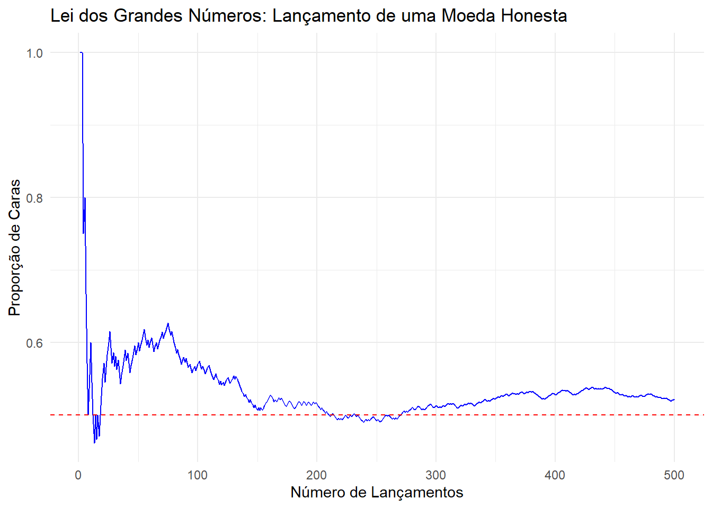

A Lei dos Grandes Números (LGN) é um dos resultados mais famosos da Teoria da Probabilidade.
Sejam \(X_1, X_2, ...\) variáveis aleatórias independentes e identicamente distribuídas (\(iid\)) com média e variância existentes e finitas, isto é \(-\infty < \mu < +\infty\) e \(0 < \sigma^2 < +\infty\).
Além disso, defina \(\bar{X} = \frac{\sum_{i=1}^{n}{X_i}}{n}\) como sendo a média amostral.
Lei Forte dos Grandes Números
A Lei Forte estabelece que a média amostral converge para \(\mu\) no infinito com probabilidade 1. Ou seja, \(\bar{X} \xrightarrow{n \rightarrow + \infty} \mu\) com probabilidade 1.
Observe que \(\bar{X} \xrightarrow{n \rightarrow + \infty} \mu\) é um evento. Logo, a Lei Forte poderia ser reescrita com uma notação probabilística alternativa:
Este resultado estabelece que \(\bar{X}\) converge quase certamente para \(\mu\). Podemos interpretar esse resultado como sendo à medida que n cresce, no infinito,\(\bar{X}\) e \(\mu\) serão iguais. Ou seja, é uma convergência pontual do valor de uma variável aleatória (a média amostral) para uma constante (a média populacional).
A prova deste teorema implica em provar que o evento acima é um evento de probabilidade 1, o que exige maior formalidade matemática fazendo uso do Lema de Borel-Cantelli.
Este resultado ilustra que \(\bar{X}\) converge em probabilidade para \(\mu\). Podemos interpretar esse resultado como sendo à medida que n cresce, é extremamente improvável que a diferença entre\(\bar{X}\)e\(\mu\)seja maior que\(\varepsilon\).
Relação entre Leis e Convergências
É intuitivo pensar afirmarmos que duas quantidades são iguais é mais “forte” do que dizer que essas duas quantidades são “altamente prováveis de estarem próximas”. Ora, se uma coisa é igual à outra, isso implica de que elas também são próximas. Tendo em vista que a Lei Forte dos Grandes Números representa a convergência quase certa e a Lei Fraca representa a convergência em probabilidade, temos que se
Este resultado mostra que a medida que ao jogarmos a moeda infinitas vezes, iremos convergir para um cenário em que metade dos lançamentos serão caras e metade serão coroas. Note que o resultado vale quando \(n \rightarrow + \infty\), ou seja, ele não estabelece nada em uma quantidade finita de lançamentos onde pode existir variabilidade. Por exemplo, mesmo que seja altamente improvável que nos primeiros 100 lançamentos todos os resultados sejam a face “Cara”, não existe nada matematicamente que estabeleça que isso seja impossível. No entanto, no limite do infinito as quantidades iniciais serão “engolidas” pela LGN. Para uma discussão mais aprofundada sobre esse tema recomenda-se uma leitura sobre o Gambler’s Fallacy.
Exemplo Computacional
No R:
Mostrar Código
# Carregar as bibliotecas necessáriaslibrary(ggplot2)library(dplyr)# Definir o número de lançamentosn <-500# Simular lançamentos de uma moeda honestaset.seed(123) # Para reprodutibilidadelancamentos <-sample(c("Cara", "Coroa"), n, replace =TRUE)# Calcular a proporção acumulada de carasdados <-data.frame(lancamentos) %>%mutate(n =row_number(),proporcao_cara =cumsum(lancamentos =="Cara") / n )# Criar o gráficoggplot(dados, aes(x = n, y = proporcao_cara)) +geom_line(color ="blue") +labs(title ="Lei dos Grandes Números: Lançamento de uma Moeda Honesta",x ="Número de Lançamentos",y ="Proporção de Caras") +geom_hline(yintercept =0.5, linetype ="dashed", color ="red") +theme_minimal()

No Python:
Mostrar Código
import numpy as npimport matplotlib.pyplot as plt# Definindo o número de lançamentosn =500# Simulando lançamentos de uma moeda honestanp.random.seed(123) # Para reprodutibilidadelancamentos = np.random.choice(['Cara', 'Coroa'], size=n)# Calculando a proporção acumulada de carasproporcao_cara = np.cumsum(lancamentos =='Cara') / np.arange(1, n +1)# Criando o gráficoplt.figure(figsize=(6, 4))plt.plot(proporcao_cara, color='blue', label='Proporção de Caras')plt.axhline(y=0.5, color='red', linestyle='--', label='Proporção Esperada (0.5)')plt.title('Lei dos Grandes Números: Lançamento de uma Moeda Honesta')plt.xlabel('Número de Lançamentos')plt.ylabel('Proporção de Caras')plt.legend()plt.grid()plt.show()